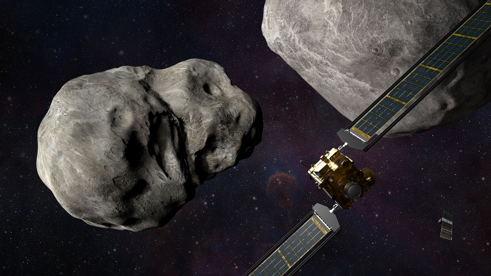

Bienvenidos a las noticias
Hubble y Webb capturan el momento en el que misión de la NASA impacta contra un asteroide
Por primera vez en la historia, los telescopios Hubble y Webb capturaron un evento astrológico al mismo momento. Fue la misión de la NASA que impactó contra un asteroide para cambiar su recorrido.
Este lunes, 26 de septiembre, la Nasa protagonizó un hecho sin precedentes: el choque planeado de una de sus misiones contra un asteroide no peligroso. El objetivo era convertirse en la primera prueba de defensa planetaria del mundo.
Esta misión, explicó la Nasa, “ayudará a determinar si estrellar deliberadamente una nave espacial contra un asteroide es una forma efectiva de desviar dicho asteroide”. La misión viajó millones de kilómetros de forma autónoma antes de impactar deliberadamente contra Dimorphos.
Explotarlos vs. desviarlos: ¿qué opciones existen para evitar que un asteroide choque con la Tierra?
Si en algún momento un asteroide amenaza con impactar la Tierra, ¿por qué no los hacemos explotar en el espacio, como ocurrió en la película de ciencia ficción "Armageddon"? Expertos de la NASA opinan que es más favorable tratar de desviarlos. Hace poco, un foro internacional denominado Comisión de Planificación Espacial reunió a 18 agencias espaciales para evaluar qué sería lo mejor para desviar un asteroide, en función de su tamaño y trayectoria.
Los dos grandes telescopios espaciales de la NASA, Hubble y James Webb trabajaron juntos para capturar el momento en el que una nave espacial se estrelló contra un asteroide como parte de la primera prueba de DART, con la que buscan redireccionar un cuerpo celeste.
Esta es la primera vez que ambos aparatos observan simultáneamente el mismo objeto y, además de arrojar increíbles imágenes, otorgan nuevos datos sobre el experimento en el que se busca tener una forma de defensa planetaria.
Cualquier texto que cambiará de color